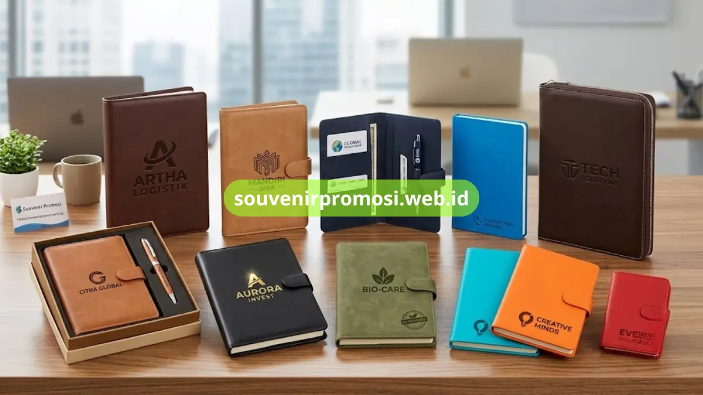
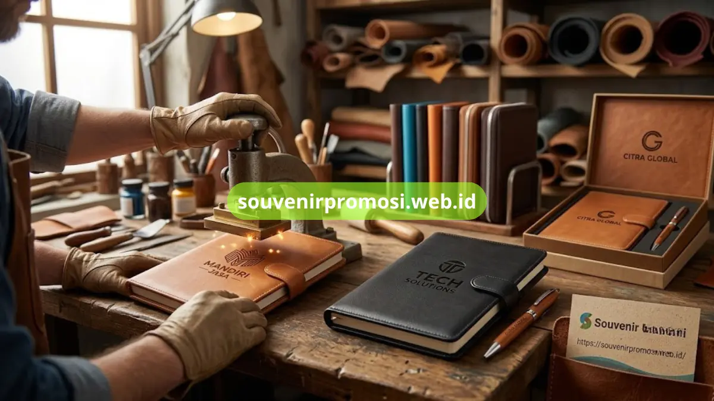

Poin Penting
- Souvenir promosi agenda kulit memadukan fungsi harian dengan media branding permanen berupa cetak logo pada sampul kulit.
- Tersedia berbagai ukuran mulai dari saku hingga ukuran meja kerja, dengan teknik cetak emboss, hot print, atau ukir laser.
- Agenda kulit asli dengan ukir laser cocok untuk hadiah direksi dan mitra strategis, sementara kulit sintetis lebih efisien untuk giveaway massal.
- Opsi ramah lingkungan dan custom warna sesuai brand guideline tersedia bagi perusahaan dengan kebutuhan identitas visual khusus.
- Souvenir Promosi menyediakan sampel desain sebelum produksi massal melalui katalog resmi di situs.
Daftar Isi
Souvenir promosi agenda kulit adalah pilihan hadiah korporat yang memadukan fungsi harian dengan media branding permanen berupa cetak logo pada sampul kulit. Berbeda dengan merchandise sekali pakai, agenda kulit dibuka dan digunakan setiap hari kerja, membuat logo perusahaan terekspos berulang kali kepada penerimanya.
Berikut sepuluh model yang paling banyak dipesan perusahaan, lengkap dengan karakteristik dan cara pemesanannya melalui Souvenir Promosi.
Kenapa Agenda Kulit Efektif untuk Branding Perusahaan
Agenda kulit tersedia dalam berbagai ukuran, mulai dari saku hingga ukuran meja kerja, sehingga dapat disesuaikan dengan kebutuhan penerima—baik karyawan lapangan, staf kantor, maupun tamu VIP. Cetak logo dapat menggunakan teknik emboss, hot print, atau ukir laser pada permukaan kulit, dan harga bervariasi tergantung jenis kulit, ukuran, dan jumlah pemesanan.
Perusahaan yang ingin memberi kesan profesional kepada klien, mitra, atau karyawan sering memilih agenda kulit karena tampilannya yang elegan dan daya pakainya yang lama. Souvenir Promosi menyediakan sampel desain sebelum produksi massal, dan pemesanan dapat dilakukan langsung melalui katalog di situs Souvenir Promosi.
10 Model Souvenir Agenda Kulit Paling Dicari
Berikut daftar model yang tersedia di katalog Souvenir Promosi, dari yang paling formal hingga yang paling ekonomis untuk kebutuhan giveaway massal.
1. Agenda Kulit Sintetis Polos dengan Emboss Logo
Model ini menggunakan kulit sintetis warna solid seperti hitam, cokelat tua, atau navy, dengan logo perusahaan dicetak melalui teknik emboss timbul tanpa warna tambahan. Cocok untuk perusahaan yang mengutamakan kesan formal dan minimalis.
Isi agenda dapat disesuaikan antara kalender harian, mingguan, atau halaman kosong. Jelajahi varian warna dan ukurannya di katalog Souvenir Promosi dan ajukan permintaan sampel sebelum memutuskan jumlah pesanan.
2. Agenda Kulit Asli dengan Ukir Laser
Untuk klien yang menginginkan bahan premium, agenda dengan sampul kulit asli dan detail logo hasil ukir laser memberi tekstur presisi tinggi pada garis logo. Model ini biasa dipilih untuk hadiah kepada direksi, tamu VIP, atau mitra bisnis strategis. Souvenir Promosi menyediakan pilihan ketebalan kulit dan finishing doff maupun glossy sesuai kebutuhan identitas merek.

3. Agenda Kulit dengan Slot Kartu Nama dan Slip Pena
Model ini menambahkan kompartemen slot kartu nama, slip pena, dan kantong dokumen tipis di bagian dalam sampul. Selain fungsi mencatat, agenda ini berfungsi sebagai organizer ringkas. Banyak dipesan untuk kebutuhan seminar, pelatihan internal, atau kit onboarding karyawan baru. Cek ketersediaan slot tambahan seperti kartu kredit atau flashdisk holder pada halaman produk Souvenir Promosi.
4. Notebook Kulit Ukuran A5 untuk Kebutuhan Harian
Ukuran A5 menjadi pilihan populer karena ringkas dibawa namun tetap nyaman untuk mencatat. Sampul kulit dicetak logo di bagian depan bawah agar tidak mengganggu ruang tulis di sisi lain. Model ini sering dijadikan merchandise event, hadiah pelanggan setia, atau bonus pembelian produk. Souvenir Promosi menawarkan opsi refill isi agenda tahunan agar cover kulit dapat digunakan berulang.
5. Agenda Kulit Eksekutif Ukuran A4 dengan Zipper
Untuk kesan yang lebih formal, agenda ukuran A4 dilengkapi zipper keliling memberi perlindungan ekstra pada dokumen dan kalkulator kecil di dalamnya. Model ini banyak dipilih untuk hadiah kepada mitra korporat atau delegasi rapat penting. Tersedia pilihan warna kulit sintetis premium yang menyerupai tekstur kulit asli.
6. Set Agenda Kulit dan Pena Custom Logo
Paket kombinasi agenda kulit dengan pena logam bercetak logo yang sama menjadi favorit untuk hampers korporat akhir tahun. Set ini dikemas dalam kotak eksklusif sehingga siap diberikan langsung tanpa perlu kemasan tambahan. Lihat pilihan kombinasi set di katalog Souvenir Promosi untuk menyesuaikan dengan anggaran acara Anda.
7. Agenda Kulit dengan Cetak Foil Warna Emas atau Silver
Selain emboss polos, cetak foil warna emas atau silver memberi efek mengkilap pada logo sehingga tampak lebih mewah di atas kulit gelap. Model ini cocok untuk perusahaan dengan identitas warna emas, silver, atau warna metalik pada logonya. Pastikan file logo vektor disiapkan agar hasil cetak foil presisi mengikuti kontur huruf dan simbol.
8. Agenda Kulit Ramah Lingkungan Berbahan Kulit Daur Ulang
Tren keberlanjutan mendorong permintaan agenda dengan bahan kulit daur ulang atau kulit sintetis rendah emisi. Model ini sering dipilih perusahaan yang ingin menonjolkan komitmen ramah lingkungan sekaligus tetap memberi kesan premium kepada penerima. Tanyakan ketersediaan bahan ini kepada tim Souvenir Promosi karena stok dapat bervariasi mengikuti musim produksi.
9. Agenda Kulit Custom Warna Sesuai Brand Guideline
Untuk perusahaan dengan panduan identitas visual yang ketat, Souvenir Promosi dapat mengusahakan pewarnaan kulit sintetis mendekati kode warna brand guideline, termasuk kombinasi dua warna pada sisi depan dan belakang sampul. Opsi ini umumnya memerlukan jumlah pemesanan minimum tertentu karena proses produksi warna khusus.
10. Agenda Kulit Mini Ukuran Saku untuk Giveaway Massal
Untuk kebutuhan giveaway dalam jumlah besar seperti seminar atau pameran, ukuran mini saku dengan cetak logo sederhana menjadi opsi paling efisien dari sisi biaya. Meski ukurannya kecil, logo tetap dapat dicetak jelas menggunakan teknik hot print standar. Model ini ideal dipadukan dengan merchandise lain dalam satu paket goodie bag korporat.
Cara Memesan di Souvenir Promosi
Memilih souvenir promosi agenda kulit yang tepat bergantung pada tujuan pemberian, anggaran, dan kesan yang ingin dibangun perusahaan terhadap penerimanya. Mulai dari model polos yang formal hingga set eksklusif dengan pena custom, seluruh varian di atas tersedia melalui katalog Souvenir Promosi.
Ajukan permintaan penawaran harga dan sampel desain sekarang melalui https://souvenirpromosi.web.id/ agar tim dapat menyiapkan mock-up logo perusahaan Anda sebelum produksi massal dimulai.
Kesimpulan
Sepuluh model agenda kulit di atas menunjukkan bahwa souvenir promosi tidak harus mengorbankan fungsi demi tampilan, atau sebaliknya. Agenda kulit tetap menjadi salah satu media branding paling awet karena digunakan setiap hari oleh penerimanya.
Konsultasikan kebutuhan agenda kulit custom logo perusahaan Anda sekarang bersama tim Souvenir Promosi untuk mendapatkan rekomendasi model dan estimasi harga yang sesuai anggaran.